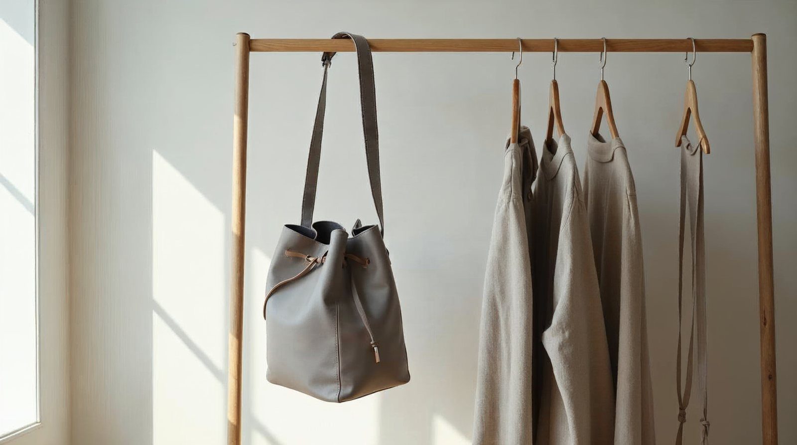
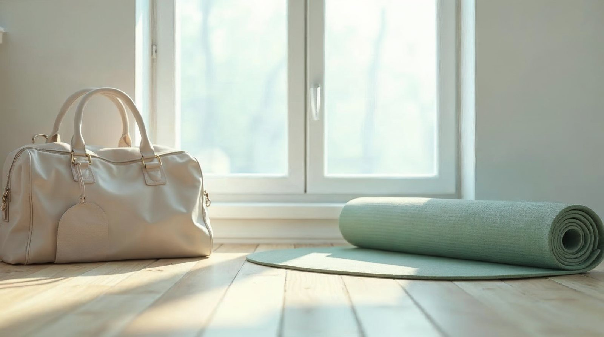
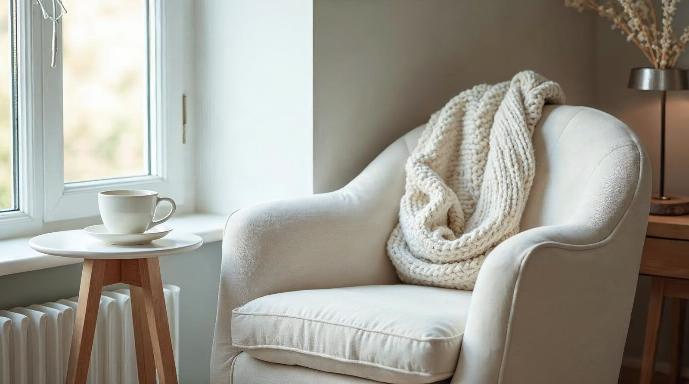
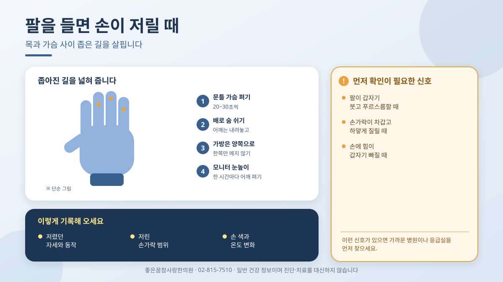

이종호 한의사 감수좋은꿈참사랑한의원 대표원장 (한의사 면허번호 19769)발행 2026-11-26 · 수정 2026-11-26
이 글의 차례
머리를 감으려고 두 팔을 올리고 있으면 어느새 손가락이 찌릿하게 저려 옵니다. 지하철 손잡이를 잡고 서 있을 때도, 높은 선반에 그릇을 올릴 때도 팔이 금세 무겁고 힘이 빠집니다. 팔을 내리면 조금 나아지는데, 어깨 앞쪽과 쇄골 근처는 늘 당기는 느낌입니다.
손이 저리면 대부분 목디스크나 손목터널증후군을 먼저 떠올리십니다. 그런데 팔을 들 때 유난히 심해지고, 새끼손가락과 팔 안쪽이 저리며, 어깨 앞이 함께 당긴다면 다른 자리도 살펴볼 필요가 있습니다.
목에서 팔로 내려가는 신경 다발과 팔로 가는 큰 혈관은 쇄골과 첫 번째 갈비뼈 사이, 목 옆과 가슴 앞의 근육 사이를 지나갑니다. 이 좁은 길을 흉곽출구라고 부르고, 이곳에서 신경이나 혈관이 눌리거나 당겨져 생기는 불편을 흉곽출구증후군이라고 합니다.
오늘은 이 좁은 길이 왜 눌리는지, 목디스크나 손목터널과 어떻게 다른지, 자세와 생활에서 무엇을 해 볼 수 있는지를 차근차근 말씀드리겠습니다.

흉곽출구는 어디에 있나요
쇄골 위쪽 목 옆을 손가락으로 짚어 보세요. 그 안쪽 깊은 곳으로 목뼈에서 나온 신경들이 모여 팔로 내려가는 다발을 이룹니다. 이 다발은 목 옆의 근육 사이를 지나, 쇄골과 첫 번째 갈비뼈 사이 틈을 빠져나간 뒤, 가슴 앞 작은 근육 아래를 지나 겨드랑이로 갑니다.
팔로 가는 큰 동맥과 팔에서 돌아오는 정맥도 거의 같은 길을 지납니다. 길이 넓을 때는 아무 문제가 없지만, 근육이 굳어 두꺼워지거나 어깨가 처지고 앞으로 말리면 이 길이 좁아지기 쉽습니다.
특히 팔을 머리 위로 들면 쇄골이 뒤로 움직이며 틈이 더 좁아집니다. 그래서 흉곽출구증후군이 있는 분은 머리 감기, 머리 말리기, 높은 곳에 물건 올리기처럼 팔을 드는 동작에서 저림이 심해지는 경우가 많습니다.
왜 이 좁은 길이 눌릴까요
가장 흔한 이유는 자세입니다. 오랜 시간 컴퓨터와 휴대폰을 보며 고개가 앞으로 나오고 어깨가 안쪽으로 말리면, 가슴 앞 근육이 짧아지고 목 옆 근육이 늘 긴장한 상태가 됩니다. 이 근육들이 신경 다발이 지나는 길을 양쪽에서 조입니다.
얕은 숨도 관련이 있습니다. 긴장하거나 오래 앉아 있으면 배로 숨 쉬지 못하고 어깨와 목을 들어 올리며 숨을 쉬게 되는데, 이때 쓰이는 목 옆 근육이 바로 신경 다발 양옆에 있는 근육입니다. 숨 쉴 때마다 그 길이 조금씩 조여지는 셈입니다.
무거운 가방을 한쪽 어깨에 오래 메거나, 팔을 머리 위로 드는 일을 반복하는 직업, 수영이나 배구처럼 팔을 높이 쓰는 운동도 이 길에 부담을 줍니다. 교통사고처럼 목이 크게 흔들린 뒤에 시작되는 분도 있습니다.
드물게는 목뼈에 덧갈비뼈가 있거나 쇄골이 부러졌다 붙은 자리처럼 뼈의 모양이 길을 좁히는 경우도 있습니다. 이런 가능성은 정형외과나 신경과 검사로 확인합니다.
목디스크, 손목터널증후군과는 어떻게 다른가요
목디스크로 신경이 눌리면 고개를 뒤로 젖히거나 아픈 쪽으로 기울일 때 팔 저림이 심해지는 경우가 많고, 목 자체의 통증이 함께 오기도 합니다. 흉곽출구증후군은 목보다 팔을 드는 자세에서 심해지고, 어깨 앞과 쇄골 근처의 당김이 함께 오는 경우가 많습니다.
손목터널증후군은 엄지, 검지, 중지 쪽이 저리고 새벽에 손이 저려 깨는 것이 특징입니다. 흉곽출구증후군은 주로 새끼손가락과 넷째 손가락, 팔 안쪽이 저리고, 손보다 팔 전체가 무겁고 빨리 지치는 느낌이 함께 오는 편입니다.
팔꿈치 안쪽에서 신경이 눌리는 경우에도 새끼손가락 쪽이 저려 헷갈릴 수 있습니다. 이때는 팔꿈치를 오래 굽히고 있을 때 심해지는 것이 단서입니다. 실제로는 두 군데 이상이 함께 눌려 있는 분도 있어, 진찰로 하나씩 나누어 봅니다.
혈관이 눌릴 때는 느낌이 조금 다릅니다
신경이 눌리는 경우가 가장 흔하지만, 혈관이 함께 눌리기도 합니다. 동맥이 눌리면 팔을 들 때 손이 차가워지고 창백해지며, 팔을 조금만 써도 금세 지치고 아픈 느낌이 듭니다.
정맥이 눌리면 팔이 붓고 무거우며, 팔과 손이 푸르스름해 보이기도 합니다. 이런 혈관 쪽 신호는 신경 저림과 달라, 병원에서 혈관 상태를 먼저 확인해야 합니다.
집에서 해 볼 수 있는 간단한 확인
의자에 바르게 앉아 두 팔을 옆으로 들어 팔꿈치를 90도로 굽히고, 항복하듯 손바닥이 앞을 향하게 합니다. 그 자세에서 주먹을 천천히 쥐었다 폈다 해 보세요. 1~2분 안에 한쪽 팔이 유난히 무겁고 저려 내리고 싶어진다면 진료실에서 말씀해 주세요.
다음으로 거울 앞에 옆으로 서서 귀, 어깨, 골반이 한 줄에 있는지 봅니다. 귀가 어깨보다 한참 앞에 있고 어깨가 앞으로 말려 있다면, 가슴 앞이 짧아지고 목 옆이 긴장한 자세일 가능성이 큽니다.
이 확인은 진단이 아니라 진료실 이야기를 위한 준비입니다. 어느 팔이, 몇 초쯤 지나, 어느 손가락이 저렸는지를 기억해 오시면 진찰이 훨씬 수월해집니다.
책상 앞 자세는 어떻게 맞추면 좋을까요
모니터 위쪽 끝이 눈높이와 비슷하도록 올리고, 화면과 눈 사이는 팔을 뻗어 손끝이 닿을 정도로 둡니다. 노트북만 쓰신다면 받침대로 화면을 올리고 따로 키보드를 쓰시는 쪽이 목과 어깨에 덜 부담스럽습니다.
키보드와 마우스는 팔꿈치가 몸 옆에 편하게 붙은 채 손이 닿는 거리에 두세요. 멀리 두면 팔을 앞으로 뻗느라 어깨가 앞으로 말리고, 그 자세로 몇 시간을 보내면 가슴 앞이 짧아집니다.
의자에 앉을 때는 엉덩이를 등받이 끝까지 붙이고, 허리 뒤에 작은 쿠션을 받쳐 보세요. 골반이 바로 서면 등이 덜 굽고, 어깨와 머리도 자연스럽게 제자리로 돌아오기 쉽습니다.
휴대폰은 눈높이 가까이 들어 올려 보시고, 오래 볼 때는 팔꿈치를 책상이나 팔걸이에 기대 주세요. 고개를 숙이고 휴대폰을 내려다보는 시간이 줄수록 목 옆의 긴장도 함께 줄어듭니다.

일과 운동에 따라 부담이 달라집니다
천장 작업, 높은 선반 정리, 머리 위로 물건을 드는 일을 반복하는 직업이라면 팔을 드는 시간을 나누어 쉬어 가는 것이 중요합니다. 몇 분 일하고 팔을 내려 어깨를 돌려 주는 짧은 쉼만으로도 저림을 덜 수 있습니다.
수영의 자유형이나 접영, 배구와 테니스 서브처럼 팔을 머리 위로 크게 쓰는 운동을 즐기신다면, 저림이 심한 동안에는 횟수와 강도를 줄여 주세요. 운동 전에 가슴 앞을 펴고 어깨를 충분히 데우는 것도 도움이 됩니다.
반대로 등 근육, 특히 날개뼈를 아래와 뒤로 모아 주는 근육을 기르는 운동은 어깨를 제자리로 돌려놓는 데 보탬이 될 수 있습니다. 가벼운 고무밴드로 팔을 뒤로 당기는 운동을 천천히, 어깨가 귀 쪽으로 올라가지 않게 해 보세요.

마음의 긴장도 어깨를 끌어올립니다
바쁘고 쫓기는 날에는 나도 모르게 어깨가 귀 쪽으로 올라가 있습니다. 이 자세로 하루를 보내면 목 옆 근육이 쉬지 못하고, 저녁이면 팔이 더 무겁고 저리다는 분이 많습니다.
하루에 몇 번, 알람이나 메신저 알림이 올 때마다 어깨를 한 번 툭 떨어뜨리고 숨을 길게 내쉬어 보세요. 작은 습관이지만, 하루 동안 그 길을 조이는 시간을 조금씩 줄여 줍니다.
먼저 이렇게 여쭙니다
처음 오시면 저는 대략 이런 순서로 여쭙니다. 미리 떠올려 오시면 이야기가 빨라집니다.
- 저린 자리는 어느 손가락 쪽이고, 팔 어디까지 이어지나요?
- 팔을 들 때, 가방을 멜 때, 고개를 돌릴 때 가운데 언제 심해지나요?
- 하루에 컴퓨터나 휴대폰을 보는 시간은 어느 정도인가요?
- 팔이나 손이 차가워지거나 색이 변한 적이 있나요?
- 예전에 목이나 어깨를 다치거나 교통사고를 겪으신 적이 있나요?
- 정형외과, 신경과에서 검사를 받으신 적이 있나요?
저림이 심했던 자세를 사진으로 찍어 오시거나, 책상과 의자에 앉은 모습을 옆에서 찍어 오시면 자세를 함께 살피는 데 도움이 됩니다.
일상에서 먼저 해 볼 수 있는 것
흉곽출구증후군의 생활 관리는 좁아진 길을 넓혀 주는 방향으로 갑니다. 가슴 앞을 펴고, 목 옆의 긴장을 줄이고, 어깨를 제자리로 돌려놓는 것이 중심입니다.
- 문틀에 팔꿈치를 어깨보다 낮게 걸고 가슴 앞을 20~30초 늘이기(저리면 멈추기)
- 턱을 살짝 당겨 뒤통수를 뒤로 미는 동작을 하루 몇 차례
- 어깨를 귀 쪽으로 올렸다가 뒤로 돌려 천천히 내리기
- 배에 손을 얹고 배가 부풀도록 천천히 숨 쉬기 하루 5분
- 무거운 가방은 한쪽 어깨 대신 양쪽으로 메거나 손을 바꿔 들기
- 모니터를 눈높이로 올리고 한 시간에 한 번 일어나 어깨 펴기
배로 숨 쉬는 연습은 생각보다 중요합니다. 누워서 배에 손을 얹고 코로 천천히 들이마시며 배가 올라오는 것을 느낀 뒤, 입으로 길게 내쉽니다. 어깨가 들리지 않는지 확인하며 몇 번만 해도 목 옆이 한결 느슨해지는 것을 느끼실 수 있습니다.
잠자리도 함께 봅니다. 팔을 머리 위로 올리고 자는 습관, 한쪽 어깨를 깔고 옆으로 오래 자는 습관은 밤새 그 길을 조입니다. 베개 높이를 목에 맞추고, 옆으로 누울 때는 앞에 쿠션을 안아 어깨가 앞으로 말리지 않게 해 보세요.
머리를 감거나 말릴 때처럼 팔을 오래 들어야 하는 일은 중간에 팔을 내려 쉬어 가며 나누어 하세요. 높은 선반에 자주 쓰는 물건이 있다면 손이 닿기 쉬운 높이로 옮겨 두는 것도 방법입니다.
한의원에서 함께 살필 수 있는 경우
- 팔을 들 때마다 새끼손가락 쪽이 저리고 팔이 금세 무거워지는 경우
- 어깨 앞과 쇄골 주변, 목 옆이 늘 당기고 뻣뻣한 경우
- 거북목과 말린 어깨가 있으면서 팔 저림이 함께 있는 경우
- 검사에서 큰 이상은 없다고 들었지만 저림과 무거움이 이어지는 경우
- 오래 앉아 일하며 숨이 얕고 어깨가 늘 올라가 있는 경우
좋은꿈참사랑한의원에서는 모든 분의 맥을 먼저 짚으며 저림이 심해지는 자세와 생활을 여쭙습니다. 그다음 목, 어깨 앞, 가슴 앞, 팔꿈치와 손목을 차례로 살피며 어느 자리에서 저림이 시작되는지, 근육의 긴장과 자세, 숨 쉬는 모양을 함께 봅니다.
진찰한 내용을 바탕으로 목과 어깨, 가슴 앞 근육의 긴장을 줄이는 침, 온열 관리, 목과 등의 움직임을 살피는 추나 가운데 지금 상태에 맞는 것을 고릅니다. 무엇을 할지는 진찰 뒤에 정하며, 같은 방법이 모든 분께 맞지는 않습니다.
정형외과나 신경과에서 처방받은 약이 있다면 그대로 이어 가시고, 임의로 멈추지 않도록 안내합니다. 한약을 상의할 때는 드시는 약을 먼저 확인하고 신중히 정합니다. 필요하면 병원 검사를 함께 받아 보시도록 안내해 나란히 살핍니다. 쇄골 골절 수술 등으로 몸에 금속 고정물이 있다면 온열 장비를 쓰기 전에 미리 말씀해 주세요.
이렇게 기록해 오시면 상담이 쉬워집니다
팔 저림은 자세와 시간에 따라 크게 달라집니다. 일주일 정도만 간단히 적어 오시면 무엇이 그 길을 조이는지 금방 보입니다.
- 저림이 심했던 때와 그때의 자세나 동작
- 저린 손가락과 팔의 범위
- 하루 컴퓨터·휴대폰 사용 시간
- 가슴 펴기, 배 숨 쉬기를 한 날 표시
- 손이 차가워지거나 색이 변한 일이 있었는지
기록을 나란히 보면 특정 동작이나 오래 앉은 날과 저림이 겹치는지가 드러납니다. 그 연결이 보이면 생활에서 무엇부터 바꿀지 정하기가 훨씬 쉬워집니다.
좁아진 길을 다시 넓히려면
흉곽출구증후군은 하루아침에 생기기보다, 오랜 자세와 숨 쉬는 습관이 쌓여 길이 조금씩 좁아진 경우가 많습니다. 그래서 회복도 자세와 숨을 조금씩 바꾸어 가며 길을 넓혀 가는 과정입니다.
팔이 저리면 큰 병이 아닐까 걱정이 앞서기 마련입니다. 저림이 어떤 자세에서 오고 어떤 자세에서 풀리는지 알게 되면, 그 걱정의 상당 부분이 '내가 조절할 수 있는 일'로 바뀌기도 합니다.
이번 주에는 문틀 가슴 펴기와 배로 숨 쉬기, 이 두 가지만 먼저 해 보세요. 다음에 오시면 일주일 기록을 함께 보며 어느 자세가 팔을 가장 괴롭히는지 찾아보겠습니다.
이런 증상은 먼저 확인이 필요합니다
- 한쪽 팔이 갑자기 붓거나 푸르스름해지는 경우, 손이 차갑고 창백해지거나 손끝 색이 변하는 경우
- 손에 힘이 갑자기 빠지거나, 가슴 통증·숨참과 함께 팔이 저리고 무거운 경우
이런 신호가 있으면 한의원보다 가까운 병원이나 응급실을 먼저 찾으세요.
함께 읽으면 좋은 글
- 목에서 팔로 저림이 내려올 때(목디스크 의심)는 어떤 점을 먼저 확인하나요?
- 새벽에 손이 저려 깨는 손목터널증후군은 어떻게 살피나요?
- 거북목과 라운드숄더는 집에서 어떤 스트레칭을 해 볼 수 있나요?
- 거북목과 일자목은 추나로 어떻게 살피나요?
- 헬스장에서 어깨 운동을 한 뒤 어깨 앞쪽이 아플 때는 무엇을 먼저 확인하나요?

여쭙는 것
- 저린 자리는 어느 손가락 쪽이고, 팔 어디까지 이어지나요?
- 팔을 들 때, 가방을 멜 때, 고개를 돌릴 때 가운데 언제 심해지나요?
- 하루에 컴퓨터나 휴대폰을 보는 시간은 어느 정도인가요?
생활에서 해 볼 것
- 문틀에 팔꿈치를 어깨보다 낮게 걸고 가슴 앞을 20~30초 늘이기(저리면 멈추기)
- 턱을 살짝 당겨 뒤통수를 뒤로 미는 동작을 하루 몇 차례
- 어깨를 귀 쪽으로 올렸다가 뒤로 돌려 천천히 내리기
한의원에서 함께 살필 것
- 팔을 들 때마다 새끼손가락 쪽이 저리고 팔이 금세 무거워지는 경우
- 어깨 앞과 쇄골 주변, 목 옆이 늘 당기고 뻣뻣한 경우
- 거북목과 말린 어깨가 있으면서 팔 저림이 함께 있는 경우
먼저 확인이 필요한 신호
- 한쪽 팔이 갑자기 붓거나 푸르스름해지는 경우, 손이 차갑고 창백해지거나 손끝 색이…
- 손에 힘이 갑자기 빠지거나, 가슴 통증·숨참과 함께 팔이 저리고 무거운 경우
한눈에 보는 표
| 구분 | 핵심 |
|---|---|
| 여쭙는 것 | 저린 자리는 어느 손가락 쪽이고, 팔 어디까지 이어지나요? 팔을 들 때, 가방을 멜 때, 고개를 돌릴 때 가운데 언제 심해지나요? |
| 생활에서 해 볼 것 | 문틀에 팔꿈치를 어깨보다 낮게 걸고 가슴 앞을 20~30초 늘이기(저리면 멈추기) 턱을 살짝 당겨 뒤통수를 뒤로 미는 동작을 하루 몇 차례 |
| 한의원에서 함께 살필 것 | 팔을 들 때마다 새끼손가락 쪽이 저리고 팔이 금세 무거워지는 경우 어깨 앞과 쇄골 주변, 목 옆이 늘 당기고 뻣뻣한 경우 |
| 먼저 확인이 필요한 신호 | 한쪽 팔이 갑자기 붓거나 푸르스름해지는 경우, 손이 차갑고 창백해지거나 손끝 색이 변하는 경우 손에 힘이 갑자기 빠지거나, 가슴 통증·숨참과 함께 팔이 저리고 무거운 경우 |
자주 묻는 질문
흉곽출구증후군과 목디스크는 어떻게 구분하나요?
목디스크는 고개를 젖히거나 기울일 때 저림이 심해지고 목 통증이 함께 오는 경우가 많습니다. 흉곽출구증후군은 팔을 들 때 심해지고 어깨 앞과 쇄골 주변이 당기는 경우가 많습니다. 두 가지가 함께 있는 경우도 있어 진찰과 필요한 검사로 나누어 봅니다.
어떤 운동은 피하는 게 좋을까요?
저림이 심한 동안에는 무거운 것을 머리 위로 드는 운동, 어깨에 바벨을 얹는 운동처럼 그 길을 조이는 동작을 줄이시길 권합니다. 가슴 펴기와 등 근육 운동은 가볍게 이어 가셔도 좋습니다.
가방은 어떻게 메는 게 좋은가요?
무거운 가방을 한쪽 어깨에 오래 메면 그쪽 어깨가 처지며 길이 좁아질 수 있습니다. 양쪽 어깨로 메는 가방을 쓰거나, 짐을 줄이고 손을 바꿔 가며 드시길 권합니다.
검사에서 이상이 없다는데 왜 계속 저린가요?
자세나 근육 긴장으로 길이 좁아지는 경우에는 검사에서 뚜렷한 이상이 보이지 않을 수 있습니다. 저림이 심해지는 자세와 생활을 함께 살펴보며 조절해 가는 것이 중요합니다.
좋은꿈참사랑한의원은 재진 때 지난번 이야기부터 이어서 여쭙니다. 진료시간과 예약은 오시는 길에서 확인하세요.
어디서 상담받을 수 있나요?
좋은꿈참사랑한의원은 서울 동작구 만양로2길 2 신성빌딩 3층·5층(서울 동작구 상도동, 7호선 상도역 3번 출구 근처)에 있습니다. 한의사 3명(이종호 대표원장, 조영기 수석진료원장, 정원영 진료원장)이 진료합니다. 진료시간은 평일 09:30~20:00(점심 13:00~14:00), 토·일·공휴일 09:30~15:00이며, 방문 전 전화로 확인을 권합니다. 예약은 네이버 예약, 카카오톡 상담, 전화 02-815-7510로 받습니다.
이 글은 일반적인 건강 정보이며 개인의 진단이나 치료를 대신하지 않습니다. 증상이 있거나 복용 중인 약이 있다면 진료를 통해 확인하세요. 치료 효과는 개인마다 다를 수 있습니다.
작성 기준: 일반적으로 알려져 있는 건강 정보를 참고해 정리했습니다(대표원장 감수). 증상 기록은 1~2주 동안 하루 1회, 비슷한 시간에 적어 오시면 지난 상태와 비교하기 쉽습니다.